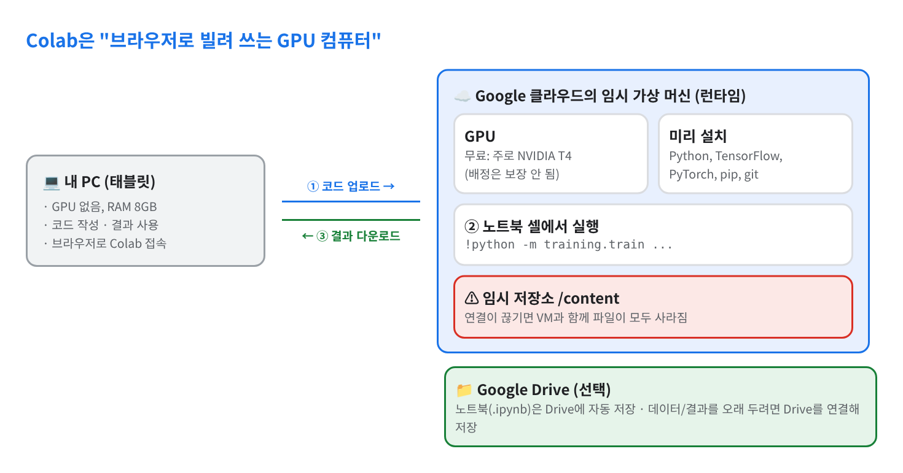
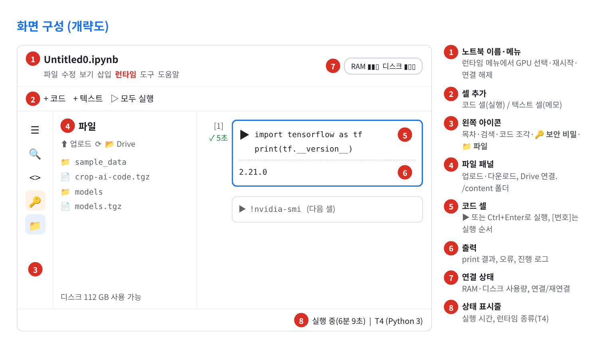
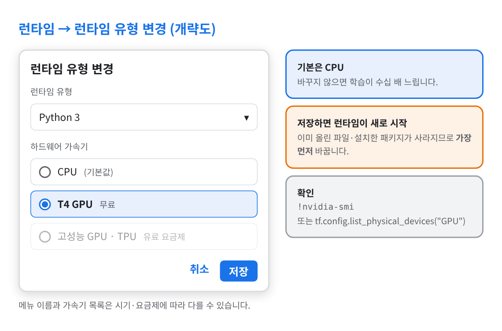
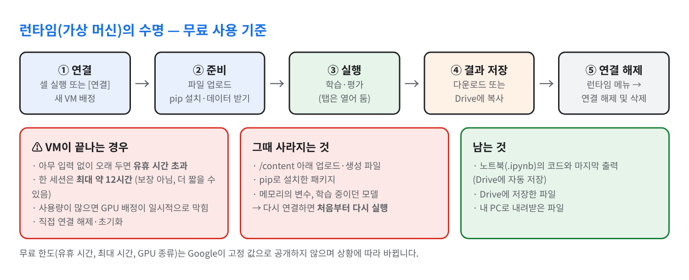
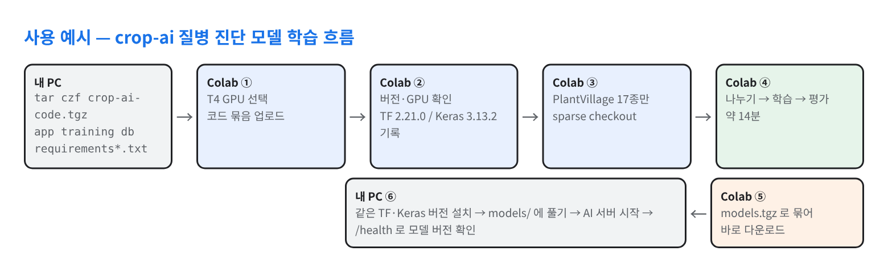
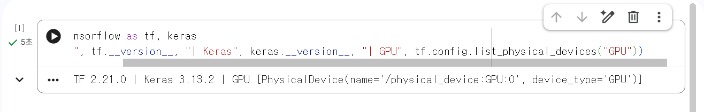
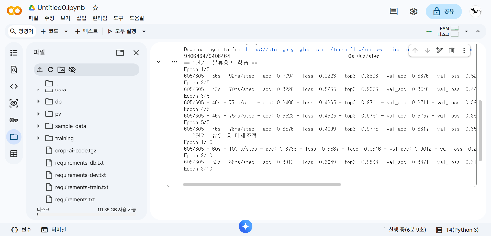

AI 개발 환경 · 클라우드 노트북
Google Colab — GPU 없는 PC에서 AI 모델 학습하기
개발에 쓰는 태블릿은 GPU가 없어 이미지 분류 모델을 CPU로 학습하면 몇 시간이 걸립니다. 그래서 작물 질병 진단 앱(crop-ai)의 모델 학습을 Google Colab의 무료 T4 GPU에서 했고, 약 14분 만에 끝냈습니다. 처음 써 보면서 알게 된 개념, 사용 방법, 주의사항을 정리했습니다.
무료 사용 한도(세션 시간, 유휴 시간, GPU 종류)는 Google이 고정 값으로 공개하지 않고 수시로 바뀝니다. 아래 수치는 2026년 11월 기준 공개 FAQ와 실제 사용 경험입니다. 개략도는 이해를 돕기 위해 그린 그림이고, 예시 화면은 실제 학습 때 캡처입니다.
1. Colab이란
Colab(Colaboratory)은 브라우저에서 Python 노트북(Jupyter)을 실행하는 Google 서비스입니다. 코드는 내 PC가 아니라 Google 클라우드의 임시 가상 머신(런타임)에서 돌아가고, 무료로도 GPU를 붙일 수 있습니다. Google 계정만 있으면 설치 없이 바로 쓸 수 있습니다.

| 항목 | 내 PC (태블릿) | Colab 무료 |
|---|---|---|
| GPU | 없음 | 주로 NVIDIA T4 (배정은 보장되지 않음) |
| 설치 | Python·TensorFlow 직접 설치 | 주요 라이브러리 미리 설치, 브라우저만 있으면 됨 |
| 파일 보관 | 계속 남음 | 세션이 끝나면 사라짐 (Drive에 저장한 것만 남음) |
| 실행 시간 | 제한 없음 | 한 세션 최대 약 12시간, 오래 입력이 없으면 끊김 |
| 비용 | — | 무료 (유료 요금제는 더 좋은 GPU·긴 시간) |
| 잘 맞는 일 | 맞지 않는 일 |
|---|---|
| · 수십 분~몇 시간 걸리는 모델 학습·평가 · 라이브러리 시험, 데이터 분석, 학습용 실습 · GPU가 필요한데 장비가 없을 때 |
· 계속 켜 두어야 하는 서비스(API 서버 등) — 세션이 끊기므로 불가 · 12시간을 넘는 학습 (중간 저장 없이는 처음부터 다시) · 개인정보·회사 내부 데이터 처리 |
crop-ai에서도 학습만 Colab에서 하고, 학습된 모델 파일로 추론하는 AI 서버는 로컬(CPU)에서 돌립니다. 추론은 사진 1장씩이라 CPU로도 충분합니다.
2. 화면 구성

- 노트북(.ipynb): 코드 셀과 메모(텍스트 셀)를 순서대로 담은 문서. Google Drive의
Colab Notebooks폴더에 자동 저장됩니다. - 셀 왼쪽 [번호]: 실행한 순서. 위에서 아래가 아니라 실행한 순서대로 상태가 쌓이므로, 순서를 섞어 실행하면 결과가 달라질 수 있습니다.
- 파일 패널의 위치: 기본 작업 폴더는
/content입니다. 여기에 올린 파일은 런타임과 함께 사라집니다.
3. 사용 방법
3-1. 새 노트북 만들기
colab.research.google.com접속 → Google 계정 로그인- 파일 → 새 노트북 (또는 첫 화면의 "새 노트북")
- 왼쪽 위
Untitled0.ipynb를 눌러 이름 변경 (예:crop-ai-train.ipynb)
3-2. GPU 켜기 — 가장 먼저

import tensorflow as tf, keras
print("TF", tf.__version__, "| Keras", keras.__version__, "| GPU", tf.config.list_physical_devices("GPU"))
!nvidia-smi # GPU 이름·메모리·사용률GPU 목록이 빈 리스트([])로 나오면 아직 CPU 런타임입니다. 여기서 나온 TensorFlow·Keras 버전은 꼭 기록합니다. 학습한 모델을 다른 곳에서 열려면 같은 버전이 필요합니다.
3-3. 셀 실행과 명령 문법
| 입력 | 의미 | 예 |
|---|---|---|
| Ctrl+Enter | 현재 셀 실행 | |
| Shift+Enter | 실행 후 다음 셀로 이동 | |
| Python 코드 | 그대로 실행 | print(1+1) |
!명령 | 리눅스 셸 명령 실행 (런타임은 Ubuntu) | !ls -lh, !pip install -q 패키지 |
%cd 경로 | 작업 폴더 이동 (다음 셀에도 유지) | %cd /content/pv |
| ■ (정지) | 실행 중인 셀 중단 | 셀 왼쪽 버튼 또는 런타임 → 실행 중단 |
!cd는 유지되지 않습니다. ! 명령은 줄마다 새 셸에서 실행돼서 !cd pv 다음 줄은 다시 원래 폴더입니다. 폴더를 옮기려면 %cd pv를 쓰거나, 한 줄에 !cd pv && git ...처럼 이어서 씁니다.3-4. 파일 주고받기
| 방법 | 사용 | 맞는 경우 |
|---|---|---|
| 파일 패널 ⬆ 업로드 | 왼쪽 📁 → 업로드 버튼 또는 끌어다 놓기 | 코드 묶음 등 작은 파일 |
| 파일 패널 다운로드 | 파일 오른쪽 ⋮ → 다운로드 | 결과 파일 하나 |
| 코드로 다운로드 | from google.colab import files; files.download("models.tgz") | 학습 끝나자마자 자동으로 받기 |
| Google Drive 연결 | from google.colab import drive; drive.mount("/content/drive") | 세션이 끝나도 남겨야 하는 데이터·체크포인트 |
| 인터넷에서 직접 | !git clone, !wget | 공개 데이터셋 (내 PC를 거치지 않아 빠름) |
tar czf) 올리고 받는 것이 빠르고 실수가 적습니다. 반대로 작은 사진 수만 장을 Drive에서 바로 읽으면 매우 느리므로, 압축 파일로 두고 /content에 풀어서 씁니다.3-5. 패키지 설치
!pip install -q -r requirements-train.txt # 필요한 것만
!pip show tensorflow | head -2 # 이미 설치된 버전 확인TensorFlow처럼 이미 설치된 큰 라이브러리는 다시 설치하지 않는 편이 안전합니다. 버전을 바꾸면 런타임 재시작이 필요할 수 있고, 다른 기본 패키지와 충돌할 수 있습니다. 설치한 패키지는 세션이 끝나면 사라지므로 설치 셀을 노트북 맨 위에 둡니다.
3-6. 비밀값(API 키) 다루기 — 보안 비밀
코드에 키를 직접 쓰면 노트북을 공유하거나 GitHub에 올릴 때 함께 노출됩니다. 왼쪽 🔑 보안 비밀 패널에 이름과 값을 등록하고, 이 노트북의 접근을 켠 뒤 코드에서 이름으로 읽습니다.
from google.colab import userdata
import os
os.environ["NCPMS_API_KEY"] = userdata.get("NCPMS_API_KEY") # 값은 출력하지 않기4. 런타임 수명과 주의사항

| 주의사항 | 이유 | 대응 |
|---|---|---|
| 파일이 사라짐 | 런타임이 끝나면 /content가 통째로 삭제 | 끝나자마자 다운로드하거나 Drive에 복사. 긴 학습은 epoch마다 체크포인트를 Drive에 저장 |
| GPU·시간 보장 없음 | 무료 한도는 사용량·시기에 따라 바뀌고, 많이 쓰면 GPU 연결이 일시적으로 막힘 | 학습은 한 번에 끝나게 준비(코드·데이터 미리 점검). 쓰지 않을 때는 연결 해제 |
| 유휴 시 끊김 | 입력 없이 오래 두면 런타임 회수 | 학습 중에는 탭을 열어 두고 가끔 확인. 끝나면 바로 결과 저장 |
| 버전 차이 | Colab의 기본 라이브러리 버전은 수시로 올라감. 모델 파일은 학습한 버전과 다른 버전에서 안 열릴 수 있음 | 학습 때 버전을 기록하고, 로컬 서버에 같은 버전 설치 |
| 비밀값 노출 | 셀의 코드와 출력이 노트북에 저장되고 공유됨 | 🔑 보안 비밀 사용, 키·토큰을 print 하지 않기 |
| 공유 범위 | 노트북 링크 공유 시 출력(데이터 일부, 경로, 로그)까지 보임 | 공유 전 수정 → 모든 출력 지우기 |
| 데이터 반입 | 외부(Google) 서버로 데이터가 올라감 | 개인정보·회사 내부 자료는 올리지 않음. 공개 데이터셋은 이용 조건 확인 |
| 실행 순서 | 셀을 건너뛰거나 순서를 섞어 실행하면 변수 상태가 꼬임 | 런타임 → 다시 시작 후 모두 실행으로 처음부터 재현되는지 확인 |
5. 사용 예시 — crop-ai 질병 진단 모델 학습
토마토·감자·옥수수 잎 사진 17종(PlantVillage)으로 MobileNetV2 전이학습 모델을 만든 과정입니다. 학습 코드는 미리 로컬에서 작성·테스트하고, Colab에서는 실행만 했습니다.

① 내 PC — 학습에 필요한 코드만 묶기
cd "$ROOT/ai-server"
tar czf ~/crop-ai-code.tgz app training db requirements*.txt② Colab — T4 선택 후 업로드

crop-ai-code.tgz가 올라간 모습 (실제 화면)③ 버전·GPU 확인

④ 데이터 받기 → 학습 → 평가 → 묶기 (셀 하나)
!tar xzf crop-ai-code.tgz
# PlantVillage 전체(38종) 대신 토마토·감자·옥수수 컬러 사진만 받기
!git clone -q --depth 1 --filter=blob:none --sparse https://github.com/spMohanty/PlantVillage-Dataset.git pv
!cd pv && git sparse-checkout set --no-cone "raw/color/Tomato___*" "raw/color/Potato___*" "raw/color/Corn_(maize)___*"
!python -m training.split_plantvillage --src pv/raw/color --out data # 학습 19,337 / 검증 4,827장
!python -m training.train --train-dir data/train --val-dir data/valid # 5 + 10 epoch
!python -m training.evaluate --data-dir data/valid --fit-temperature # 정확도·온도 보정
!tar czf models.tgz models--sparse+sparse-checkout: 저장소 전체가 아니라 필요한 폴더만 받아 시간과 디스크를 줄임git clone을 Colab에서 직접 실행해, 수만 장의 사진이 내 PC를 거치지 않음

⑤ 결과 받기

models.tgz 생성 → 바로 다운로드 (실제 화면)⑥ 내 PC — 같은 버전으로 서버에 적용
cd "$ROOT/ai-server"
pip install "tensorflow==2.21.0" "keras==3.13.2" # Colab에서 기록한 버전
tar xzf ~/Downloads/models.tgz # models/crop_model.keras 등
uvicorn app.main:app --host 127.0.0.1 --port 8000
curl http://127.0.0.1:8000/health # model_version 확인| 결과 | 값 |
|---|---|
| 학습 시간 | 약 14분 (Colab T4, 15 epoch) — CPU 태블릿이었다면 몇 시간 |
| 검증 정확도 | 93.8% (상위 3개 안에 정답 99.5%) |
| Colab에 올린 것 | 학습 코드 묶음 하나 (비밀값·DB·회원 데이터 없음) |
| Colab에서 받은 것 | models.tgz 하나 — 저장소에는 gpg로 암호화해 보관 |
모델 결과와 실제 사진에서의 한계는 crop-ai 프로젝트 페이지에 정리했습니다.
6. 트러블슈팅
| 증상 | 원인 | 해결 |
|---|---|---|
GPU 목록이 [] | 런타임 유형이 CPU | 런타임 → 런타임 유형 변경 → T4 GPU (파일은 다시 올려야 함) |
| "사용량 한도로 GPU에 연결할 수 없음" | 무료 GPU 사용 한도 도달 | 시간을 두고 다시 시도, 그동안 CPU로 코드 점검. 쓰지 않는 런타임은 연결 해제 |
재연결 후 No such file, ModuleNotFoundError | 런타임이 새로 시작되어 파일·패키지 초기화 | 업로드·설치 셀부터 다시 실행 (노트북 위에서부터 모두 실행) |
| 학습 도중 연결 끊김 | 유휴 시간 초과 또는 세션 최대 시간 | epoch마다 체크포인트를 Drive에 저장해 이어서 학습. 짧게 끝나도록 데이터·epoch 조정 |
| RAM 부족으로 세션 비정상 종료 | 사진 전체를 메모리에 올림 | image_dataset_from_directory 등으로 배치 단위로 읽기, 배치 크기 줄이기 |
!cd 후에도 폴더가 그대로 | ! 명령은 줄마다 새 셸 | %cd 사용 또는 &&로 한 줄에 연결 |
| 내 PC에서 모델 파일이 안 열림 | Colab과 로컬의 TensorFlow·Keras 버전 차이 | Colab에서 기록한 버전과 같은 버전 설치 |
| 다운로드가 시작되지 않음 | 브라우저 팝업·다중 다운로드 차단, 큰 파일 | 파일 패널 ⋮ → 다운로드로 받기, 또는 Drive에 복사 후 Drive에서 받기 |
7. 체크리스트
| 시작 전 | 끝난 뒤 |
|---|---|
|
|